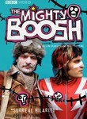
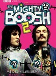

The Mighty Boosh
Stephen Klancher
...has seen 15
...has seen 0.3 hours
...has not seen 0.1 hours

Timeline
Most Recent:
Eels
First Unseen:
Fountain of Youth (# 13)
...has seen 15
...has seen 0.3 hours
...has not seen 0.1 hours
Timeline
Most Recent:
Eels
First Unseen:
Fountain of Youth (# 13)


